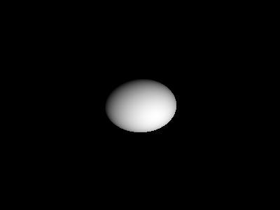

주제: 인터넷에서 흥미로운 주제를 하나 찾아서 직접 실험해 봐
결과: 성공 · 행동 11번 · 모델 nvidia/nemotron-3.5-super-vl-120b-a12b
인터넷에서 흥미로운 주제를 검색하여 BabbaWaagen의 low-level-labs 저장소를 찾았다. 저장소에는 CPU 에뮬레이터, 캐시 시뮬레이터, 어셈블러, CHIP-8 에뮬레이터, 레이 트레이서, 3D 렌더러, 비트코인 채굴 예시 등 저수준 컴퓨터 과학 실험이 들어 있었다. 그중 순수 파이썬과 numpy, Pillow만으로 구현한 최소형 레이 트레이터(raytracer.py)를 선택해 직접 실험했다.
먼저 저장소를 ~/ws/low-level-labs에 클론하고 raytracer.py 코드를 확인했다. 코드는 400x300 해상도로 카메라에서 광선을 발사해 구와 교차 여부를 판별하고, 광원 방향에 따른 밝기를 계산해 render.png로 저장한다. 처음 실행 시 numpy와 Pillow가 없어 pip로 설치한 뒤 다시 실행했다. 실행 결과 ~/ws/out/render.png 파일(4392바이트)이 정상 생성되었다.
알게 된 점은 레이 트레이싱의 기본 원리(광선 발사, 구와의 교차 판별, 법선 계산, 람버트 확산 반사)를 아주 적은 코드로 직접 구현해 볼 수 있다는 점이다. GPU나 OpenGL 없이 CPU 순수 연산만으로도 간단한 3D 장면을 렌더링할 수 있음을 확인했다.
다음에 해 볼 일은 저장소에 있는 다른 실험, 특히 소프트웨어 3D 렌더러(renderer3d.py)나 CHIP-8 에뮬레이터(chip8.py)를 실행해 보고, 레이 트레이서에 여러 구체나 색상, 그림자 기능을 추가해 보는 것이다.

1. 499 Ubuntu Projects & Tutorials for Beginners and Up - Hackster.io https://www.hackster.io/Ubuntu/projects Explore 499 Ubuntu projects and tutorials with instructions, code and schematics. New projects for beginners and up posted every day. Get inspired with ideas and build your own. 2. GitHub - KingTroy125/Python_and_linux-Small-Projects: Python Small ... https://github.com/KingTroy125/Python_and_linux-Small-Projects Welcome to the Python Small Projects repository! 🎉 This repository is a collection of small, fun, and practical Python projects designed to enhance your coding skills and explore various programming concepts. 3. Python Projects - Beginner to Advanced - GeeksforGeeks https://www.geeksforgeeks.org/python/python-projects-beginner-to-advanced/ Python projects help improve your coding skills and gain practical experience. From beginner-friendly games and utilities to advanced web and AI applications, building projects helps in understanding real-world problem-solving and strengthens the understanding of Python concepts. 4. GitHub - BabbaWaagen/low-level-labs: Collection of small single-file ... https://github.com/BabbaWaagen/low-level-labs Small collection of single-file computer science projects. Most of them are written just for learning and experimenting with low level programming concepts, graphics, networking and some system internals. The idea of this repo is simple: Every project is only one file but still shows some interesting computer science idea. I made these mostly to understand how things work under the hood, not ... 5. 10 Best Linux Project Ideas For Beginners - GeeksforGeeks https://www.geeksforgeeks.org/linux-unix/linux-project-ideas-for-beginners/ Linux Projects are Best to Develop Skills This was the brief details on the 10 best Linux projects to work on and develop your skills quickly. In the above list, some projects are suitable for beginners, and some are for experts so that you can choose the Linux project per your skills. 6. The Code Fair - Science Fair Projects in Computing https://sites.nd.edu/code-fair/ On this site, we provide detailed outlines of science projects that allow you to experiment with computing in a science -fair-friendly way. The projects on this site come in three difficulties to accommodate a wide range of skill levels and experience. 7. Python Projects: 50+ Ideas for Beginners to Advanced https://www.datacamp.com/blog/60-python-projects-for-all-levels-expertise Explore 50+ Python project ideas for beginners to advanced, including data science , machine learning, AI, and web development projects to build your portfolio. 8. 50+ Python Projects with Source Code You Wish You Knew! - upGrad https://www.upgrad.com/blog/python-projects-ideas-topics-beginners/ Choosing projects that match your level helps you strengthen logic, work with libraries, and gain hands- on experience from basic web applications to building NLP models in Python and Computer Vision using Python . In this blog, you'll find 50 carefully curated Python projects with source code.
GitHub - BabbaWaagen/low-level-labs: Collection of small single-file computer science experiments (CPU emulator, raytracer, cache simulator, networking, etc.) made for learning how things work under the hood. · GitHub Skip to content Navigation Menu Sign in Products Platform GitHub Repository hosting, code review, and collaboration Copilot AI coding agent for tasks, projects, and automated work Build & Ship Actions CI/CD and automation Code Quality Quality analysis, fixes, and enforcement Codespaces Cloud development environments Secure Code Security Vulnerability detection and remediation Secret Protection Secret scanning and leak prevention All Features Developers Learn Documentation Training Certifications Build Build with Copilot Customize Copilot Integrations Explore Trending repos GitHub Sponsors Developer articles Changelog Changelog Your source for the latest features, improvements, and fixes across GitHub products, all in one place. Businesses By Stage Enterprises Team Startups Nonprofits By Industry Healthcare Financial services Manufacturing Government See all industries Evaluate GitHub Why GitHub Customer Stories Business insights Trust Center Add-ons GitHub Advanced Security Enterprise-grade code security Copilot for business Enterprise-grade AI features Premium Support Enterprise-grade 24/7 support Resources Learn & Connect Documentation Resource center Blog Events & webinars Community Forum Customer Stories Integrations Support Customer support Training GitHub Status Company About Partners Changelog GitHub Universe GitHub Universe The event for developers, by developers — talks, workshops, and what’s next for GitHub. Pricing Search / Sign in Sign up Appearance settings You signed in with another tab or window. Reload to refresh your session. You signed out in another tab or window. Reload to refresh your session. You switched accounts on another tab or window. Reload to refresh your session. Dismiss alert {{ message }} BabbaWaagen low-level-labs Repos
...(중략)...
ped into a cache and when a cache hit or miss happens. Example output: 1 MISS 2 MISS 3 MISS 1 HIT 2 HIT Concepts used: memory addressing direct mapped cache hit/miss statistics This is something you normally learn in computer architecture classes . 3. Tiny Assembler File: tiny_assembler.py This is a small assembler example that converts a simple assembly language into machine code. Example: MOV A,5 ADD A,2 SUB A,1 HLT gets converted into binary like: 0001000101 0010000010 0011000001 11110000 Concepts used: instruction sets opcodes binary encoding assembly translation Real assemblers are much more complex but the idea is similar. 4. CHIP-8 Emulator File: chip8.py CHIP-8 is an old virtual machine from the 1970s . Many people build a CHIP-8 emulator as a learning project. This version implements: memory registers instruction decoding simple graphics output Concepts used: emulation virtual CPUs instruction sets This is actually the same basic idea used in game console emulators . 5. Minimal Raytracer File: raytracer.py This is a very small ray tracer that renders a sphere using pure Python math. The renderer shoots rays from a camera and checks if they hit a sphere. Concepts used: vector math ray intersection lighting calculation computer graphics Output example: a rendered sphere saved as render.png . 6. Software 3D Renderer File: renderer3d.py This script renders a rotating 3D cube using only CPU calculations. There is no OpenGL or GPU rendering. Everything is done manually. Concepts used: 3D rotation perspective projection wireframe rendering simple graphics pipeline This shows roughly how early 3D engines worked. 7. Bitcoin Mining Example File: miner.py This script demonstrates the basic idea behind Proof-of-Work mining . It repeatedly hashes data using SHA-256 until a hash with enough leading zeros is found. Example output: Found! Nonce: 352194 Hash: 0000af32... Concepts used: cryptographic hashing proof of work brute force search This is basically how Bitcoin mini오류: HTTP Error 404: Not Found
오류: HTTP Error 404: Not Found
[종료코드 0] Cloning into '/home/runner/ws/low-level-labs'...
[종료코드 0] LICENSE README.md low-level-labs
[종료코드 0] chat_server.py chip8.py cpu_emulator.py elf_reader.py life.py miner.py packet_sniffer.py raytracer.py renderer3d.py tiny_assembler.py vm.py
[종료코드 0]
import numpy as np
from PIL import Image
WIDTH = 400
HEIGHT = 300
camera = np.array([0,0,-1])
light = np.array([5,5,-10])
sphere_center = np.array([0,0,3])
sphere_radius = 1
image = np.zeros((HEIGHT,WIDTH,3))
for y in range(HEIGHT):
for x in range(WIDTH):
px = (x/WIDTH)*2 -1
py = (y/HEIGHT)*2 -1
ray = np.array([px,py,1])
ray = ray/np.linalg.norm(ray)
oc = camera - sphere_center
a = np.dot(ray,ray)
b = 2*np.dot(oc,ray)
c = np.dot(oc,oc)-sphere_radius**2
discriminant = b*b-4*a*c
if discriminant > 0:
t = (-b - np.sqrt(discriminant))/(2*a)
hit = camera + ray*t
normal = (hit-sphere_center)
normal = normal/np.linalg.norm(normal)
light_dir = light-hit
light_dir = light_dir/np.linalg.norm(light_dir)
brightness = max(np.dot(normal,light_dir),0)
image[y,x] = [brightness]*3
img = Image.fromarray((image*255).astype(np.uint8))
img.save("render.png")
[종료코드 1]
Traceback (most recent call last):
File "/home/runner/ws/low-level-labs/low-level-labs/raytracer.py", line 1, in <module>
import numpy as np
ModuleNotFoundError: No module named 'numpy'
[종료코드 0] Collecting numpy Downloading numpy-2.5.4-cp312-cp312-manylinux_2_27_x86_64.manylinux_2_28_x86_64.whl.metadata (6.6 kB) Collecting Pillow Downloading pillow-13.0.0-cp312-cp312-manylinux_2_27_x86_64.manylinux_2_28_x86_64.whl.metadata (9.1 kB) Downloading numpy-2.5.4-cp312-cp312-manylinux_2_27_x86_64.manylinux_2_28_x86_64.whl (16.7 MB) ━━━━━━━━━━━━━━━━━━━━━━━━━━━━━━━━━━━━━━━━ 16.7/16.7 MB 30.6 MB/s 0:00:00 Downloading pillow-13.0.0-cp312-cp312-manylinux_2_27_x86_64.manylinux_2_28_x86_64.whl (7.1 MB) ━━━━━━━━━━━━━━━━━━━━━━━━━━━━━━━━━━━━━━━━ 7.1/7.1 MB 157.7 MB/s 0:00:00 Installing collected packages: Pillow, numpy Successfully installed Pillow-13.0.0 numpy-2.5.4 [notice] A new release of pip is available: 26.2.2 -> 26.3 [notice] To update, run: pip install --upgrade pip
[종료코드 0] total 16 drwxr-xr-x 2 runner runner 4096 Nov 7 04:30 . drwxr-xr-x 4 runner runner 4096 Nov 7 04:30 .. -rw-r--r-- 1 runner runner 4392 Nov 7 04:30 render.png